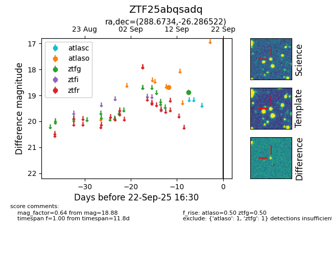

FINK: ZTF25abqsadq
Lasair: ZTF25abqsadq
ALeRCE: ZTF25abqsadq
ZTF25abqsadq (ztf,fink)
equatorial (ra, dec) = (288.6734,-26.28652)
galactic (l, b) = (11.3560,-16.42554)

last atlaso=18.68, ztfg=18.88
1 atlaso, 1 ztfg detections